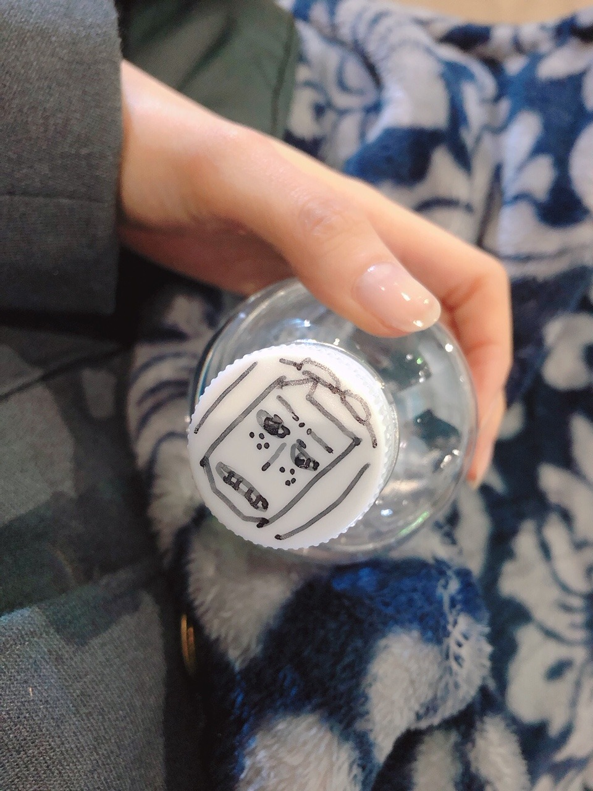
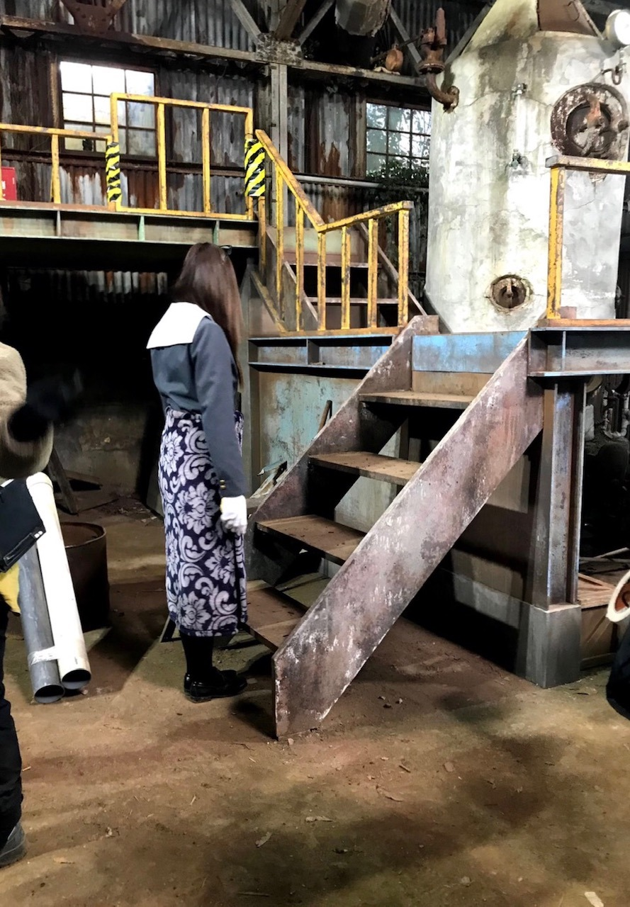

夢って見ます？私は最近 よく見ます。夢はあまり好きではありません
もうパーカーも暑いですねえ。
気づいたら随分
お久しぶりになってしまいました。
いかがお過ごしですか？
もう外から入ってくる匂いが
完全に夏に近い。ですね。
いつの間に季節をまたぎそう。
季節の変わり目は悲しくなりますね( '-' )
昼間の風もすごく好きだけど
夜風が気持ちくて夜は特に
窓の近くにいてます。気持ちい
季節の変わり目は特に、
温度調節が難しいし
風邪も引きやすいので皆様ご自愛くださいね。
そんなこんなでもうスーパーには
桃が並んでいましたよ。
桃大好きなので嬉しい☀︎
それと同時に苺が無くなってしまうのが
凄く悲しい。
今日は鶏もも肉と卵の甘酢煮 作りました☀︎
豚の角煮もいいけれど、
鶏もも肉もすごく美味しいですねえ。
さて！ドラマ 「映像研には手を出すな！」
先日TBSにて最終回の放送が終わりました！

いやあ、本当にあっという間でした。
ご覧くださった皆様、
本当にありがとうございました！
テレビの前で観ていると
撮影の日々がフラッシュバックしてきましたねえ。
長い期間ずっと撮影していたものだから
沢山の思い出が詰まっているのです。
色々思い出しながら重ね合わせながら
毎話観ていました☀︎
まだ地域によって放送は続きますし
先日映画の予告編も公開になりまして
まだまだ映像研はここからですので、皆様
今後とも引き続きよろしくお願い致します！

何してるのだろうか？
懐かしい。
衣装がめちゃくちゃに夏だ☀︎
そうそう、
ちょっと前に頼んだ
楽しみにしていた夏服が届きました。
とっても可愛いの〜( .. )
可愛くて可愛くてすぐ着てみた☀︎
早く外で着られる日が来ますように。
春服も一緒に買っていたけど
来年に持ち越しかなあ。
握手会でも着たい！ので
開催できる日が待ち遠しいです☀︎
本当にありがとうございます！
皆様の近況が知れてとても嬉しいです。
楽しくコメント読ませていただいてます◎
また書きますね
フードの安心感って
すごいっすよね
では
また。
毎日の献立を考えるのって本当に大変。
全国のお母さん、本当に尊敬します。
母の日でしたね☀︎
大好きな母には贈り物を贈りました！感謝でいっぱいです︎︎︎︎✌︎
Original：https://www.nogizaka46.com/s/n46/diary/detail/56198?ima=4938&cd=MEMBER